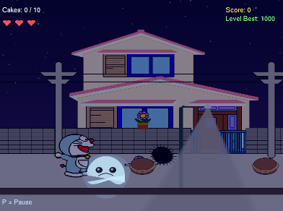

A simple Java desktop launcher inspired by the Epic Games Store, built for learning GUI development, user management, and asset handling. Login/registration and a game library are planned.

A Windows Forms desktop clone featuring user auth, game browsing, cart, search, and detail views with local JSON storage.

A side-scrolling platformer where a Doraemon-inspired character collects doracakes across five themed levels while avoiding hazards.It is a funny game also.